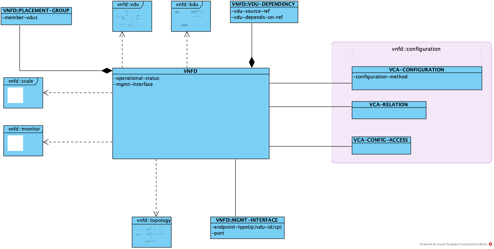
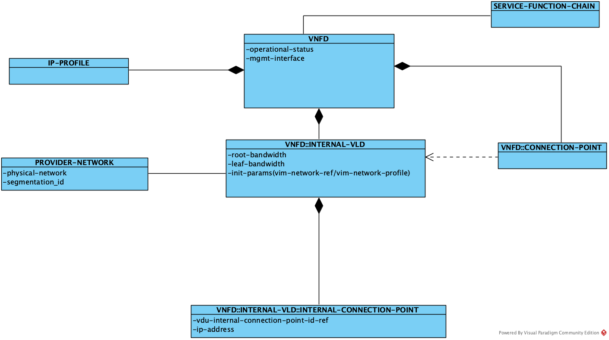
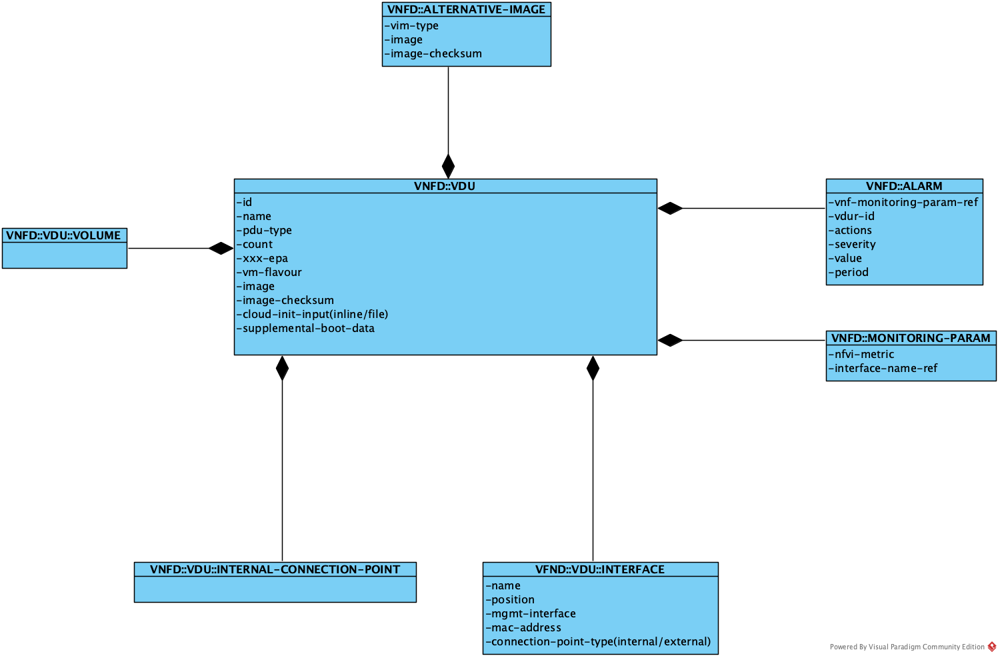

VNFD(Virtual Network Function Descriptor)
VNFD描述了网络服务内部VNF的属性和拓扑。
VNFD主要属性如下图所示： 
configuration
定义了VNF的配置属性和配置方法。包括：vca-configuration, vca-relation和vca-config-access。
其中，vca-configuration和vca-relation定义了vnf的配置动作参数以及vnf内部组件之间的依赖关系，它们的详细定义可以参考NSD的配置部分，vca-config-access定义了vnf实例的访问方式。
topology
VNFD内部可能包含了多个VDU，它们之间也存在着拓扑连接关系。 
vdu
vdu实例对应到虚拟机实例。它包括以下属性： 
kdu